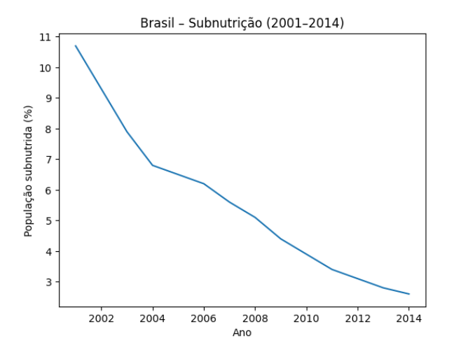
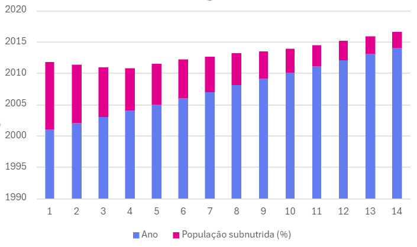
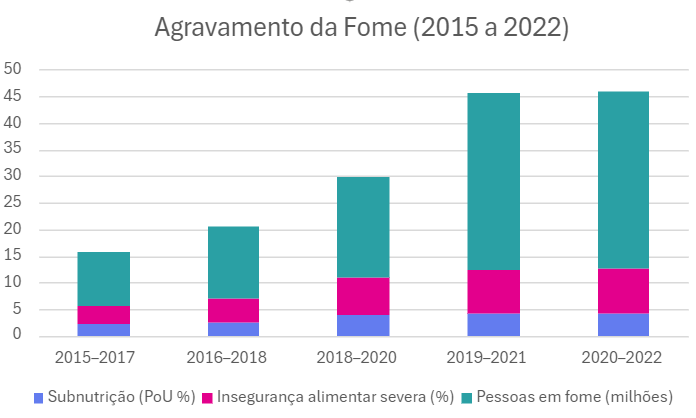

Disciplina: Língua Portuguesa
Professora: Aldalina Ribeiro Freitas
ALUNO: Rafael Bruno da Silva
Relatório sobre a alimentação (dados da ONU)
Relatório da alimentação nos estados brasileiros segundo a ONU
O relatório da ONU sobre a alimentação nos estados brasileiros indica que o Brasil não faz mais parte do Mapa da Fome. O país alcançou esse patamar em 2014, mas voltou a constar no Mapa da Fome no triênio 2018/2020. Agora, no triênio 2022/2024, voltou a ficar abaixo de 2,5%. A saída do Brasil do Mapa da Fome é resultado de decisões políticas do governo brasileiro que priorizaram a redução da pobreza, o estímulo à geração de emprego e renda, o apoio à agricultura familiar, o fortalecimento da alimentação escolar e o acesso à alimentação saudável.
https://g1.globo.com/politica/noticia/2025/07/28/brasil-sai-novamente-do-mapa-da-fome-segundo-relatorio-da-onu.ghtml
Insegurança alimentar (2000/2025)
Elaborado por:
Rafael Bruno da Silva
Para:
Instituto Federal do Rio Grande do Norte
Data de Emissão:
Dezembro, 2025.
Versão:
1.0
Introdução
Definição e Conceitualização da Fome
A fome, em sua acepção mais estrita e conforme monitorada por organismos internacionais como a FAO, é definida como a condição de subalimentação crônica – ou seja, a ingestão alimentar que é insuficiente para fornecer a quantidade de energia alimentar (calorias) necessária para manter um peso corporal normal para uma vida ativa e saudável.
É crucial, no entanto, distinguir a fome da Insegurança Alimentar, um conceito mais amplo.
Subalimentação (Fome): Foco na falta crônica de calorias suficientes. É o indicador que determina a presença ou ausência de um país no chamado "Mapa da Fome" da ONU.
Insegurança Alimentar: A condição de acesso limitado ou incerto a alimentos nutricionalmente adequados e seguros, ou a capacidade limitada de adquirir alimentos de forma socialmente aceitável. A insegurança alimentar é medida em diferentes níveis (leve, moderada e grave) e engloba não apenas a falta de calorias, mas também a qualidade da dieta e a regularidade do acesso.
A análise deste relatório se baseará primariamente no indicador da Prevalência de Subalimentação da FAO, que mede a fome crônica, mas contextualizará as oscilações com o cenário mais amplo da Insegurança Alimentar no Brasil.
Panorama da Fome no Brasil (2000–2025) com Dados da FAO/ONU
O relatório principal utilizado para essas avaliações é o "Estado da Segurança Alimentar e Nutricional no Mundo" (SOFI), produzido conjuntamente por agências da ONU, incluindo a FAO (Organização das Nações Unidas para Alimentação e Agricultura). A classificação no "Mapa da Fome" da ONU depende do índice de subalimentação (pessoas sem acesso contínuo a uma alimentação minimamente necessária) ser inferior a 2,5% da população. A Trajetória em Três Fases 1. Avanços e Saída do Mapa da Fome (Anos 2000 a 2014) Neste período, o Brasil implementou uma série de políticas públicas de combate à fome e à pobreza, como o programa Fome Zero e o Bolsa Família. Esses esforços foram bem-sucedidos, e o país alcançou a marca de menos de 2,5% de sua população subalimentada, saindo do Mapa da Fome em 2014. O crescimento da renda e a expansão de programas sociais foram fatores-chave.


https://www.indexmundi.com/facts/brazil/indicator/SN.ITK.DEFC.ZS?utm_source=chatgpt.com
O gráfico exibido mostra a queda contínua da prevalência de subnutrição no Brasil, medida em percentual da população, conforme metodologia da FAO/ONU.
O que ele demonstra claramente:
Em 2001, cerca de 10,7% da população brasileira estava subnutrida.
Ao longo dos anos 2000, observa-se redução constante, sem grandes interrupções.
Em 2014, o índice cai para aproximadamente 2,6%, valor próximo ao limite de 2,5% utilizado pela FAO para definir a saída do Mapa da Fome.
Essa trajetória sustenta empiricamente a afirmação de que o Brasil avançou no combate à fome nesse período.
2. Retorno e Agravamento da Fome (2015 a 2022)
Nos anos seguintes, a desestruturação de políticas públicas e crises econômicas levaram a um aumento progressivo da insegurança alimentar. O Brasil retornou ao Mapa da Fome na análise referente ao triênio 2018-2020, com a situação se agravando significativamente durante a pandemia de COVID-19. Dados do período 2021-2022 apontaram que 33,1 milhões de brasileiros estavam em situação de fome, um aumento de 60% em relação a 2018.

FAO/ONU – The State of Food Security and Nutrition in the World (SOFI) Rede Brasileira de Pesquisa em Soberania e Segurança Alimentar (PENSSAN)
O gráfico evidencia o retorno do Brasil ao Mapa da Fome a partir do triênio 2018–2020, quando a prevalência de subnutrição ultrapassa o limite de 2,5% estabelecido pela FAO. Observa-se também o crescimento acelerado da insegurança alimentar severa e do número absoluto de pessoas em situação de fome, que atinge 33,1 milhões em 2021–2022, agravado pela pandemia de COVID-19 e pela fragilização das políticas públicas de segurança alimentar.
3. Nova Redução e Saída do Mapa (2023 a 2025)
Relatórios mais recentes, como o SOFI 2025 (que analisa o triênio 2022-2024), indicam uma nova e rápida reversão dessa tendência. Graças à retomada de políticas sociais e programas de transferência de renda, o Brasil conseguiu reduzir o índice de subalimentação para abaixo de 2,5% novamente, saindo do Mapa da Fome pela segunda vez. Cerca de 24 milhões de pessoas saíram da situação de insegurança alimentar grave até o final de 2023.

https://grabois.org.br/2025/08/13/mapa-da-fome-como-brasil-saiu-segunda-vez/
O período entre 2023 e 2025 marca uma inflexão significativa no quadro da fome no Brasil. Após anos de agravamento, a retomada de políticas públicas de segurança alimentar, aliada à ampliação de programas de transferência de renda e valorização do salário-mínimo, resultou em uma rápida redução da subnutrição e da insegurança alimentar severa. Dados do SOFI indicam que o país voltou a apresentar índices de subalimentação inferiores a 2,5%, permitindo sua segunda saída do Mapa da Fome.
A retirada de cerca de 24 milhões de pessoas da situação de fome grave até o final de 2023 evidencia o papel decisivo das políticas estatais na garantia do direito humano à alimentação adequada. No entanto, a experiência recente demonstra que tais avanços não são irreversíveis, reforçando a necessidade de políticas contínuas e estruturantes para evitar novos retrocessos.
Desafios Atuais
Apesar da saída do mapa, que é um marco estatístico, a insegurança alimentar moderada ou grave ainda afeta milhões de brasileiros (cerca de 28 milhões, segundo dados de 2025). Além disso, o custo de uma dieta saudável permanece elevado para grande parte da população, e o sobrepeso e a obesidade são preocupações crescentes, afetando cerca de 60% dos adultos. Mais informações podem ser encontradas nos relatórios oficiais no site da Organização das Nações Unidas para Alimentação e Agricultura (FAO).
Síntese conclusiva
O estudo da Prevalência de Subalimentação no Brasil, utilizando dados da FAO/ONU no período de 2000 a 2025, revela que a trajetória do país no combate à fome é um reflexo direto da continuidade e do investimento em políticas sociais estruturais.
Fase de Sucesso (2000-2014): A saída do Brasil do Mapa da Fome em 2014 foi um feito histórico, impulsionado pela eficácia de programas como o Fome Zero e o Bolsa Família, demonstrando que a redução da pobreza e o aumento da renda são fatores determinantes para a segurança alimentar.
Fase de Retrocesso (2015-2021): O subsequente retorno ao Mapa da Fome evidenciou a fragilidade das conquistas sociais diante de crises econômicas e desarticulação das políticas de proteção, provando que a fome é um problema que ressurge rapidamente na ausência de vigilância e investimento contínuos.
Aprendizado e Recuperação (Pós-2022): A recente reversão da tendência, com projeções de nova saída do Mapa, reitera a necessidade de um compromisso político ininterrupto com a proteção social e o fortalecimento da agricultura familiar.
A lição central é: O Brasil sabe como erradicar a fome, mas manter a segurança alimentar exige estabilidade no financiamento, combate contínuo à desigualdade estrutural e o foco em garantir não apenas calorias, mas o acesso a uma dieta nutricionalmente adequada para toda a população.
Referencias:
(Anos 2000 a 2014)
https://www.gov.br/mds/pt-br/acoes-e-programas/brasil-sem-fome/balanco/balanco_atualizado_mapa_da_fome.pdf?utm_source=chatgpt.com
(2015 a 2022)
https://www.gov.br/mds/pt-br/acoes-e-programas/brasil-sem-fome/balanco/2024/relatorio_balanco_pt.pdf?utm_source=chatgpt.com
(2023 a 2025)
https://www.gov.br/secom/pt-br/assuntos/noticias/2025/10/brasil-volta-ao-menor-patamar-de-fome-da-historia
https://www.indexmundi.com/facts/brazil/indicator/SN.ITK.DEFC.ZS?utm_source=chatgpt.com
https://grabois.org.br/2025/08/13/mapa-da-fome-como-brasil-saiu-segunda-vez/
Chat GPT
Google AI
Gemini
Slide
FRAME-CODE